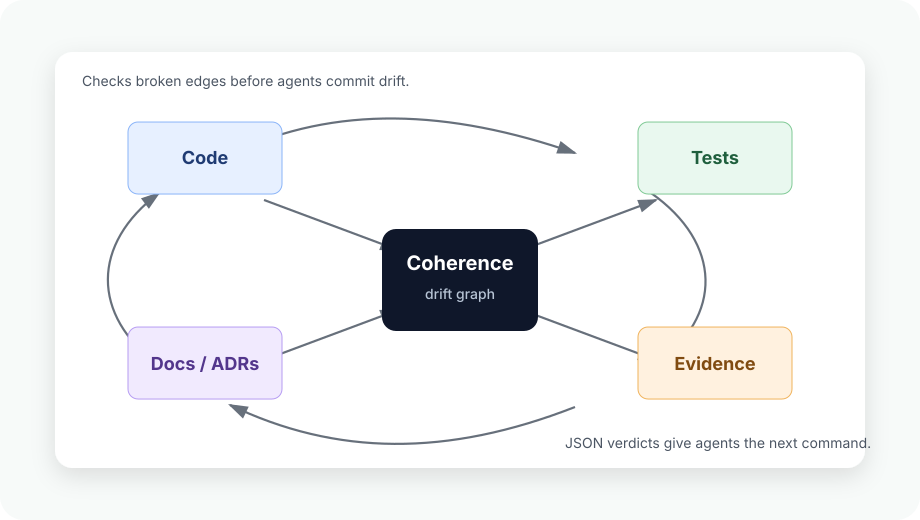

Step 1
Install
curl -fsSL https://github.com/fireharp/coherence/releases/latest/download/install.sh | shGit-native drift detector
Coherence is not an AI reviewer. It is a repo consistency harness for AI-edited codebases. Tests pass. The repo still drifts. Coherence catches the broken links between code, docs, ADRs, tests, metrics, generated files, endpoints, and evidence - especially after AI-agent edits.

Coherence is deliberately narrower than a general AI reviewer and broader than a single docs-or-architecture drift check.
| Tool/category | Positioning | Coherence differentiation |
|---|---|---|
| Fiberplane Drift | Binds Markdown specs to code anchors and flags docs as stale when bound code changes. | Broader repo-graph drift across ADRs, tests, metrics, generated artifacts, endpoints, and evidence. |
drift-analyzer |
Detects deterministic architectural erosion and structural drift in AI-accelerated codebases. | Adds traceability and semantic repo consistency, not only structural analysis. |
AgentSys /drift-detect |
Compares documented plans and project docs with actual implementation using deterministic collectors plus one LLM analysis call. | Deterministic CLI/JSON-first checks with an optional LLM pass. |
| AgentLint | Audits the agent harness: AGENTS.md, CLAUDE.md, CI, hooks, and related rule surfaces. |
Checks whether changed repo artifacts still support each other. |
Install the release binary, initialize rules for an agent repo, then run the worktree review before handoff or commit.
Coherence runs locally. Deterministic checks do not send code anywhere. The optional LLM pass is disabled by default and only runs when COHERENCE_LLM=1 or --llm is set.
Step 1
curl -fsSL https://github.com/fireharp/coherence/releases/latest/download/install.sh | shStep 2
coherence init --template=agent-repoStep 3
coherence review --base=HEAD --worktree --jsonRun Coherence on pull requests with strict drift gating.
name: coherence
on:
pull_request:
jobs:
coherence:
runs-on: ubuntu-latest
steps:
- uses: actions/checkout@v4
with:
fetch-depth: 0
- name: Install Coherence
run: curl -fsSL https://github.com/fireharp/coherence/releases/latest/download/install.sh | sh
- name: Review repo drift
run: ~/.local/bin/coherence review --base=origin/main --worktree --json --strictTests can pass while the repository gets less coherent. Coherence reports that as a typed regression with a concrete next action.
{
"safe_to_commit": true,
"review_recommended": true,
"drift_verdict": "telemetry",
"drift_regression_count": 1,
"drift_regressions": [
{
"kind": "newly_orphaned_endpoint",
"id": "endpoint:GET:/api/orders",
"suggested_action": "add or restore a test that verifies the source file defining endpoint:GET:/api/orders"
}
],
"recommended_next_command": "coherence drift --json"
}Use Coherence where normal tests do not explain whether the repository still tells one story.
| Scenario | Command | What you get |
|---|---|---|
| Coding agents | coherence review --base=HEAD --worktree --json |
Worktree drift, typed regressions, suggested commands, and a machine-readable commit verdict. |
| Pre-commit | coherence scan --staged |
Fast staged-file checks against ontology rules before drift reaches history. |
| PR review | coherence review --base=origin/main --staged --json |
PR-shaped signal across the branch diff plus staged local changes. |
| Zero-drift CI | coherence review --base=origin/main --worktree --json --strict |
Telemetry promoted to exit 1 when CI needs every drift signal handled. |
| Debugging | coherence drift --json |
Full meter output for broken links, orphan endpoints, stale tests, trace coverage, and optional Go callsite meters. |
Agents should consume the JSON contract, not parse human prose.
1
coherence review --base=HEAD --worktree --json2
drift_regressions[]
suggested_commands[]3
Restore the missing test, evidence, generated artifact, link, or ontology-paired file.
4
coherence review --base=HEAD --worktree --jsonKeep the homepage small. Use the existing Markdown reference for deep algorithm details.